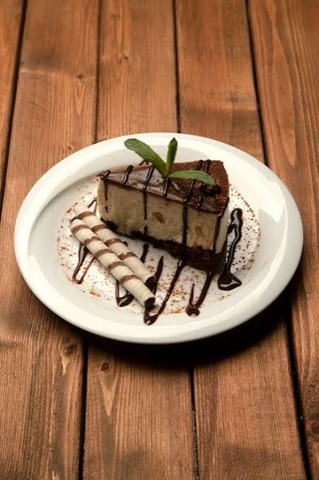

Chocolate Cheesecake

Description:
The chocolate cheesecake is rich in both chocolate and cheese.
It is noticeably less sweet than many other American desserts, and somewhat more complicated.
Ingredients:
- 5 Tbsp butter, melted
- 2 cups chocolate wafer/cookie/graham cracker crumbs
- 3 packages (24 ounces / 705 g) cream cheese, at room temperature
- 1 cup packed brown sugar
- 5 ea. (250 g) eggs
- 4 ounces (215 g / 4 squares) semisweet chocolate, melted
- 6 ounces (150 g / 6 squares) semisweet chocolate, melted
- ½ cup sour cream
Steps:
- Place rack in center of the oven. Preheat oven to 150 °C (300 °F).
- If starting with whole cookies, crackers, or wafers, place them in a sturdy plastic bag a few at a time and crush using a rolling pin, or grind using a food processor.
- Mix together chocolate crumbs and melted butter.
- Press crumb mixture into bottom and sides of 9-inch springform pan.
- In a large bowl, beat together sugar and eggs at medium speed, slowly adding cream cheese, until smooth and fluffy.
- Spoon half of cream cheese mixture into crust.
- Melt 4 ounces of chocolate using a double boiler or, with care, a microwave. Stir into remaining cream cheese mixture until well blended.
- Drizzle chocolate cream cheese mixture over batter in crust. Draw a spoon or other implement through the batter a few times to make swirls. Spread evenly.
- Bake cheesecake for 50 minutes. After the first 30 minutes has gone by, place aluminum foil on top to prevent cracking and scorching.
- Cool completely.
- Cover with plastic wrap, and chill for about 2 hours or up to several days.
- Transfer cheesecake to a serving plate.
- Uncover cheesecake; carefully remove side of pan.
Home